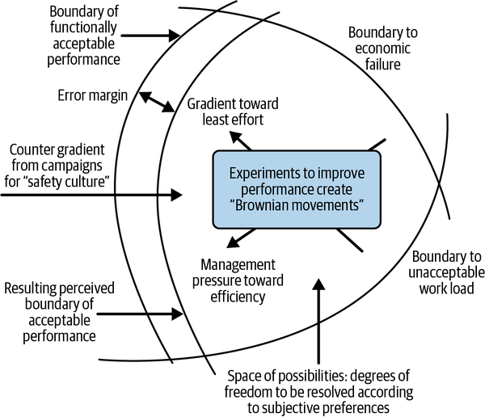

When the goal is reliable systems operating at scale, outages are more than disruptions to be resolved effectively; they are invaluable learning opportunities. For over a decade, the practices and culture of Site Reliability Engineering at Google have supported continual and iterative learning from our observed and narrowly avoided system failures. This fundamental aspect of SRE emphasizes blameless postmortems, psychological safety, collaboration, and executive support in order to understand what happened and improve the overall system, obtaining maximum benefit from each outage.
This chapter covers these enduring core tenets of incident analysis and delves into how our understanding and application of them have evolved over the past 10 years. You’ll discover how we’ve refined our practices, leveraged advanced tooling, and deepened our appreciation for the human element, allowing us to learn from incidents to build more resilient and robust services.
The original SRE Book and Chapter 10 of The Site Reliability Workbook covered key principles and practices for learning from incidents through the deeply ingrained blameless postmortem culture at Google. Ten years on, the need to learn from failure remains central to building and operating resilient systems. This section walks through those foundational lessons on incident analysis and postmortems, including practices for operationalizing them. Building upon that base, we will then explore the evolution and advancements in our practices, tools, and understanding over the past decade, sharing how our approach to turning incidents into invaluable lessons has matured.
Chapter 15 in the first edition of this book covered the principled foundations of a blameless postmortem culture. The following foundational concepts are still relevant today:
The main goal of postmortems is to maximize the value of an incident by capturing key lessons that feed forward to the organization. Any incident worthy of remediation provides an opportunity to learn, whether due to the impact, duration, monitoring failures, or cascading side effects. To this end, the most essential components of a postmortem are:
Key facts about the incident, like the timeline, activities, and personnel involved
Impact analysis covering which customers, users, or systems experienced degradation due to the incident
Contributing causes (deviations, activities, or data) that led to the incident
Lessons learned that synthesize the events with subject matter experts’ analysis
Together, these capture the return on the unplanned investment made in the incident and inform action plans to improve resilience.
A core principle of Google’s postmortem culture is blamelessness. It is essential that incident reviews focus on understanding systemic causes rather than assigning blame to individuals. This approach is foundational to psychological safety and effective learning. For a detailed exploration of blameless culture, see Chapter 4.
Complex systems are the product of large, interdependent teams. When they fail in unexpected ways, teams must work together to identify the many contributing factors and jointly design corrective actions. This collaboration throughout the postmortem process is a driver of future resilience, as the teamwork itself makes the team more resilient in future incidents.
Leaders set the tone and priorities for the organization. When leaders model blamelessness and support, and raise the visibility of postmortems and learning-from-incidents programs, individuals and teams prioritize these activities over business as usual, leading to increased system resilience. Creating structural incentives around writing postmortems and closing out the prioritized action items further highlights the impact and importance of this work.
The Site Reliability Workbook highlights specific activities and behaviors that operationalize a blameless postmortem and learning culture. These include:
Due to the complexity of the systems in question, it is crucial to capture logs, events, and activities associated with an incident. A detailed timeline enables us to identify the earliest possible opportunities for detecting and preventing future incidents. In addition, incidents often have multiple contributing causes. Identifying these—including the social structures and behaviors that shaped both the events leading up to the incident and the incident response itself—is essential for developing effective corrective actions.
Humans are ultimately driving these postmortem practices, and it’s critical to address any behaviors and communication styles that erode psychological safety. Keeping questions open-ended and devoid of judgment leads to better analysis. For example, avoid asking questions like “Why did you think it was okay to deploy this code?” that might cause people to put up their defenses. Instead, ask “What about the situation made deploying the code seem like the best course of action?” This gives the person the opportunity to talk about the characteristics of the system or organization that influenced their decision.
Quick or temporary fixes on top of unstable systems are sometimes necessary to buy time to build the right set of fixes and tools. However, left in place too long, they may breed even worse fragility, defects, and incidents. A robust action plan after an incident not only considers ways to prevent, detect, or mitigate future incidents of that variety, but it also looks at impact mitigation or deeper interventions that could build more resilience into the system.
Reliably executing the mitigation and prevention plans not only ensures a more stable and resilient system but also instills confidence in the overall postmortem process. Owners should be clearly identified and incentivized to prioritize closing out action items. Ensuring teams have adequate capacity to implement these changes is also critical. This will ensure fixes are robust and do not breed further fragility through hastily applied patches.
Making postmortems and subsequent action plans visible and easily accessible can increase their impact beyond the immediate teams involved. Google sends out curated weekly outage reports and a biannual company-wide newsletter called Google’s Greatest Hits. These reports include links to the postmortems and ensure the learning Google acquires through this work reaches well beyond the SRE team.
These measurable and observable activities are what bring the foundational principles into focus and ensure they persist within engineering teams as they evolve and grow.
The principles and practices of blameless postmortem culture and learning from incidents created the underpinnings for the continuous learning that happens across Google SRE today. Thanks to this stable foundation, teams are continuously adapting and evolving to improve coverage and efficiency. In this section, we detail some of these advancements. Many of them stem from the increasing awareness that improving reliability involves not only software and hardware but also the humans who are part of the system. We use the term sociotechnical system to include the human component when studying incidents. In practice, this translates to an emphasis on the following:
SRE at Google has evolved to incorporate the practical application of safety science and systems and control theory.1 This systems thinking allows us to embrace the inherent complexity of our systems, from software servers and client applications to datacenter, networking, and capacity systems. It is supported by a range of complementary methods and practices, including:
System-Theoretic Process Analysis (STPA)2
Causal Analysis based on Systems Theory (CAST)3
Capturing the incident “story” and unlocking the power of storytelling as a vehicle for learning
Capturing and analyzing detailed communication logs
Facilitating open discussions with incident responders to understand their mental models and decision-making processes
Many teams appoint an independent postmortem lead (who did not participate in the incident) to conduct an impartial analysis. This individual is responsible for gathering information, facilitating the analysis, and ensuring the incident is reviewed in a holistic manner. This often involves conducting interviews with the people who participated in the decisions leading up to and during the outage. The objective of this comprehensive analysis is to identify the contributing factors for all aspects of the incident, including decisions made during hardware or software development, system operations, and incident detection and response. Rather than singling out decisions as mistakes, the lead takes a blameless approach of capturing what made them seem like the right ones at the time. To be successful, they must pay careful attention to avoiding both outcome bias (the tendency to judge a decision based on its outcomes rather than the soundness of the reasoning that went into it) and hindsight bias (the tendency to assume that things that were obvious only in retrospect could have been known earlier in time). The postmortem lead also looks at what went right and identifies ways to make sure the right things will happen consistently in the future.
During the postmortem process, Google works to make sure that the people closest to the decisions and circumstances leading up to the incident are part of the analysis and remediation. More importantly, the people involved in the decisions contributing to the incident are enlisted and empowered to identify opportunities for improvement and own delivering the solutions. This removes blame and accusations from the learning discussion and emphasizes the criticality of the human participants in making the systems more resilient. This approach, where people are asked to participate in the work to make the system better rather than being punished for their perceived mistakes, is sometimes referred to as restorative accountability. It’s essential to real learning and improvement and helps create a culture of accountability without sacrificing psychological safety.4
Over the last 10 years, Google Cloud has emerged as a key Google business, making customer success a central consideration in learning from incidents. Postmortems capture thorough customer impact analyses, document customer communications during the incident, analyze whether customers had any workarounds, and identify opportunities to improve the overall customer experience. Remediation plans address how to better measure, prevent, and reduce customer impacts and/or improve customer communication and confidence. This has instilled higher confidence in Google Cloud’s reliability and better business outcomes for our customers. This approach is illustrated in “Case Study: Paris Data Center Outage”.
Organizational learning goes deeper when incident postmortem reviews occur at multiple levels of the organization. Google teams prioritize the following best practices:
Peer reviews: Independent reviewers assess postmortems to ensure lessons learned and action plans will reduce future impacts, such as how to detect issues sooner, or mitigate impacts, or communicate more smoothly.
Team reviews: Teams review postmortems to address areas of complexity that could be reduced through broader refactoring or better design practices.
Organizational socialization: Sharing postmortems and best practices across the organization increases knowledge of adjacent systems’ behaviors and improves reliability.
Executive reviews: Senior leaders continuously and blamelessly review reliability trends, high-profile incidents, and successful launches to monitor the sociotechnical system and model the behaviors that reinforce safety culture.
Over the last 10 years, the systems SRE teams use to manage and study incidents have become more sophisticated, connected, and automated, while continuing to emphasize deeper, human-driven discussion and study of the patterns and antipatterns that emerge during incident response and mitigation. These advancements allow SREs to gather critical data on complex system behavior and combine it with insights into human behavior. In turn, this enables broader sociotechnical system analysis, leading to deeper insights and more durable mitigation plans. Google’s AI tools, such as Gemini Notebook, have also unlocked new capabilities and automation that enhance learning from incidents. For example, you can seed a Gemini Notebook instance with a large number of postmortem documents, and then ask the AI whether a proposed design change would have prevented some of the incidents.
Google has a historically strong resilience engineering approach.5 However, this is largely based on experiential learning and practical discovery. When situations arise that need a different approach, we often look to outside researchers to articulate the underlying theory of why things are done a certain way, and what might be done differently for a particular team or context. It’s important to note that these ideas are not universally applied across Google SRE. Rather, teams use the theories that best address each situation based on the specific circumstances and needs. This reflects the thinking that “All models are wrong, but some are useful.”6
For simple systems, learning from incidents involves breaking apart and understanding individual components and their failure states. But at a certain scale, our systems move beyond these simple linear chains to something more complex. New, emergent, often unpredictable system-wide behaviors arise because of the interactions between components, and these interactions can cause outages even when all component parts are working exactly as intended. The concept of a complex adaptive system (CAS) helps us reason about these interactions. A CAS is composed of many interconnected and interacting components and agents (including software, hardware, and human elements), adapting their behavior in response to each other and the environment. To deal with complex and emergent behaviors, we need to adopt a systems thinking perspective.7
The following sections give a sampling of relevant scientific studies, models, and frameworks that SRE teams use at Google. As mentioned, teams decide which concepts to apply based on their specific contexts and needs.
One of the oldest concepts used in CAS incident analysis is the Swiss cheese model, formulated by James T. Reason, which explains how combinations of active and latent failures can interact to produce the emergent conditions that lead to an outage.8 This is also popular with some of Google’s security teams as a defense-in-depth concept. Importantly, the individual “cheese slices” are a mixture of technical and human components. Using this model for incident detection also provides near-miss coverage, for example where only one slice is left, or the impact was low for an unrelated reason. In postmortems we don’t just look for what goes right or wrong, but also where we got lucky. Just like in fields such as aviation, near-miss analysis and proactive improvements help us prioritize actions to take before similar incidents occur.
In Jens Rasmussen’s risk management model, a continuous flow of economic and reliability pressures combine to form a steady flow state instead of a stable one.9

Under this model, incidents occur at the boundary of acceptable performance (plus or minus the error margin). By the time incidents occur, we are at the “firefighting” stage. “Fire prevention” is continuously needed to push against the boundary. To improve safety culture, SRE uses postmortems alongside proactive tools such as STPA (discussed in Chapter 12), which can anticipate system failures before they occur.10
Another key way of looking at sociotechnical systems is to better differentiate between how systems operate in theory versus practice. Erik Hollnagel proposes that people can imagine many theoretical ways to prevent things from going wrong. In practice, however, they still go wrong, despite all of the planned defenses. It’s then that individuals have to provide the adaptability and flexibility to keep the system running. This contrast is often talked about externally as part of a Safety II (versus Safety I) approach. Safety I focuses on trying to prevent bad things from happening. Safety II involves looking at the normal functioning of our systems as a combination of technical components and ever-changing human interventions. It shifts the mindset from examining why things went wrong to ensuring that the right things are more likely to happen.11
Local human expertise is essential to this process. As such, a good default at Google worth highlighting is that our teams both build and run the services they manage, accumulating practical local expertise in their systems. Our systems perform reliably because people are flexible and continuously adapt to change, not because they have been perfectly designed to prevent failures. We’ve talked about proactive approaches such as STPA, but other obvious areas, such as Disaster Resilience Testing (DiRT), contribute to Google getting better at ensuring systems work effectively rather than responding reactively to incidents. Another example of this proactive approach is our investment in building generic mitigations, which address common failure modes.
Richard Cook has argued that a CAS fails differently than a simple system.12 It’s worth highlighting a few key observations from his work that are especially relevant to SREs. Notably:
Because of Google’s size and scale, it’s safe to assume that at any given moment, some components of our systems are operating in degraded states. For example, Colossus hosts exabytes of disks. At any moment, some have failed and are waiting for replacement, and others are on the verge of failure. As this illustrates, complex system failure modes are not binary but rather exist on a continuum. Since degradation is the norm, resilience mechanisms work in tandem to prevent overall system failure.
Large-scale systems are inherently hazardous because changes to individual components can combine to form unexpected emergent properties.13 These systems undergo continuous changes while under continuous usage, making it impossible to isolate system components in either space or time. For example, at any point in time, Google’s systems are continuously reconciling the production environment with the current state of the monorepo.14
Because of the high impact of system failures and the high expectations for system quality, our systems have multiple defenses against failure and many automated interventions. As a result, multiple system component failures are needed to cause a catastrophic failure. However, because there is no stable system state, these failures are always feasible. This makes investing in quality a high priority, but one where it’s inherently not possible to predict the return on investment. As such, investing in these efforts is more about managing risks than achieving specific outcomes.
One of the underpinnings of our approach to CAS systems management is the Safety II view of how to think differently about complex systems. One way of describing this is David Woods’s concept of “graceful extensibility” or “sustained adaptability.”15 This perspective emphasizes that we should not just focus on making systems more redundant or robust.
As we stated previously, many of our systems are constantly in a degraded state, so we explicitly design for the graceful degradation of these systems. Done well, this means systems can stretch to cover unexpected failure modes, which aligns with the graceful extensibility concept. However, this can also result in rapid decompensation or cascading system failures. Multiple individual component failures can be tolerated for a while without triggering an outage, then suddenly overwhelm the system. Network outages often follow this pattern: individual Points of Presence (PoPs) can go offline, and traffic will be rerouted to maintain service; however, once a critical number is reached, a single additional failure can cause the global network to suddenly go offline.
Since many of our platforms need to support a multitude of both known existing and unknown future use cases, they need to have a level of sustained adaptability. Our core compute platform, Borg, has continuously evolved over 20+ years, its sociotechnical structure adapting to new challenges well beyond its original design. We didn’t set out with this principle in mind, but the approach we took closely aligns with the concept of sustained adaptability: assumptions and contexts of use are both unknown and unknowable, people adapt to shortfalls as they occur, and the system is constantly adjusting to other connected systems across the wider ecosystem.
For complex sociotechnical systems, traditional accident causality models based on a linear chain of events can be inadequate. An alternative approach is to use systems theory, as in Nancy Leveson’s Systems-Theoretic Accident Model and Processes (STAMP) causality model.16 STAMP provides techniques for deeper system analysis, such as CAST,17 for retrospective incident analysis and STPA18 for proactive hazard analysis. We discuss STAMP, STPA, and CAST in more detail, with real-life examples, in Chapter 12.
Earlier in this chapter, we outlined the best practices Google promotes across SRE. The case study described here provides a real-world example of these practices in action, to illustrate the impacts across our own sociotechnical systems.
In April 2023, Google experienced a large, day-long outage impacting most of Google Cloud, stemming from a water leak in a cooling pipe in the Paris datacenter,19 which supports the Google Cloud region europe-west9. This incident provided a significant opportunity for learning, not just about addressing and preventing water leaks, but also about how each Cloud product could improve its overall response to datacenter events. In this case study, we’ll look at how we approached learning about the incident from a customer communication and incident response perspective, with a focus on the impact and response for the Google Compute Engine product.
The postmortem for the incident was started immediately following mitigation. To ensure that the incident analysis was blameless, fast, and thorough, we assigned the postmortem author lead role to a senior technical leader who had not been part of the response but who knew the relevant organizations and systems well. This choice also gave the responders a much-needed break. The lead was given access to all chat rooms, working documents, monitoring dashboards, and incident notes so they could do a comprehensive analysis. They also interviewed responders, customer support engineers, and technical leaders.
To better understand the customer and responder experiences, the lead first compiled the timeline of events, capturing when we first detected the water leak, when we brought in various experts, when different mitigations were applied, and when we communicated with external customers. This timeline was used to facilitate discussions with responders and customer support engineers around what went well, what went wrong, and where we got lucky.
Times are in US Pacific Time (PT).
16:46 — Water leak began above europe-west9-a zone.
17:25 — First automated alert fired, signaling that some machines in the affected area were going offline. Engineers acknowledged the alert within minutes and began investigating.
17:31 — Datacenter operations detected and alerted engineers about the water leak in the room, which would critically impact one cluster supporting our europe-west9-a zone. (A “cluster” represents a collection of servers along with their supporting equipment for networking, power, and cooling.)
18:30 — Google gradually brought down Google Compute Engine (GCE) virtual machine instances from this cluster to prevent the water from interrupting customer workloads in an uncontrolled manner.
18:37 — As a preventative measure, engineers preemptively powered down all networking, storage, and other equipment supporting the cluster.
19:00 — Google posted a vague external incident summary to the Cloud status dashboard: “We are investigating an issue affecting multiple Cloud services in the europe-west9-a zone.”
19:14 — Smoke was detected in the building with the water leakage.
19:17 — Google responders paged in a Cloud product communications lead—someone whose role is product-specific customer communication during outages—to make sure future communication with customers would be more detailed and timely.
19:42 — Google responders completed a remote power down of the impacted cluster.
19:45 — The local fire department was called.
20:00 — The fire department arrived on-site and took over incident command of the building fire.
20:08 — Google responders were informed of the battery room fire. Responders realized that it was likely that the fire department would shut down building power (including backup power) to safely extinguish the fire.
20:16 — Google responders assessed that regional impact was likely if power to the building was lost. The incident commander decided to move some critical services out of the building. Responders begin preparing and executing the necessary steps.
22:45 — The building’s fire suppression system water supply ran out. The fire department ordered building power shut down. At this time, SREs learned they were out of time to move all critical services out of the building. They discussed alternative mitigations with additional experts.
23:04 — Emergency shutdown commenced for one of the three buildings in europe-west9 on order of the fire marshal. At this time, our regional Spanner lost quorum. (Spanner20 is Google’s globally distributed database. Compute Engine uses Spanner to store data for each cloud region.) This meant services could no longer read or write data in the region.
Due to a software design flaw, this then triggered a global outage for some API methods that fan out and perform multiregional queries.
23:37 — Responders attempted a known generic mitigation to address the issue with the API methods. The attempt did not succeed.
23:46 — Responders brainstormed a list of potential mitigations. They assessed that only three could be safely implemented and tested in a matter of hours. The incident commander asked three responders to split off and work on implementing each of these ideas in parallel.
00:52 — The battery room fire suppression system was restored.
03:10 — The first of the newly implemented mitigations was ready. Responders deployed it. Work on the other two ideas continued as backup options in case the first did not succeed.
03:23 — The second of the newly implemented mitigations was now ready. Responders prepared to deploy it in case the previous mitigation did not work.
03:38 — The deployed mitigation was successful, resolving the global issue with unavailable API methods. This meant the outage’s impact was confined to a single region.
03:46 — Google posted a detailed description of the incident to its Cloud status dashboard.
04:11 — The battery room fire was reported to be extinguished.
04:17 — Datacenter operations started incrementally powering back on the clusters in the building that were not impacted by the fire or water leak. This allowed service teams to start their service recovery efforts.
04:40 — First cluster was fully powered on.
07:24 — Second cluster was fully powered on.
At this point, Compute Engine waited for all of its dependencies to come online.
12:47 — Regional Spanner quorum was restored and internal Spanner operations resumed. Services were able to read and write to regional data stores.
13:00 — The fire department confirmed the battery temperatures were stabilized, and the majority of the fire crew departed.
14:42 — The last Compute Engine dependency came back online. Compute Engine responders initiated its playbook to power on all of its services.
19:00 — Google Compute Engine control plane services were restored across all zones in the region. For the clusters in europe-west9-a that were not affected by the water leak, everything was back up and running. The cluster in europe-west9-a that was affected by the water leak had smoke damage, so it could not be powered on. The severity of the smoke damage led to the whole cluster being decommissioned. Before decommissioning the cluster, we cleaned it and fully recovered all zonal data.
To fully capture the experience, the postmortem lead reached out to various people involved in the incident to get their perspectives. This included customer representatives, as well as the engineers who had joined the incident response.
From the customer’s perspective, the two most frustrating aspects of the outage were the lengthy recovery time after power restoration (nearly 12 hours, from 07:24 to 19:00) and the slow and unhelpful customer communication. While customers appreciated that Google was transparent about the situation, they felt that communication could have been faster, more proactive, and more accurate. The product communications lead also remarked that they felt balancing accuracy, precision, and speed was a challenge. At this stage in the outage, information was limited and the responders’ understanding was constantly evolving; it was hard to keep track of what we knew for certain and what were only hypotheses. As an example, during the outage, the product communications lead used the phrase “water intrusion.” This later became a distraction and a source of amusement for various news sources and social media users.
Responders felt they had limited mitigation options, and the ones they had were too slow. This necessitated developing solutions during the high-stakes incident, increasing stress. Responders noted that the size and complexity of the response stretched the limits of the current incident management structures. The overall incident commander was responsible for the whole of the outage, from the datacenter operations to the multitude of Google Cloud products that were impacted. They lacked the context to make per-product decisions and often didn’t know who the correct product decision makers were.
The postmortem lead identified three key areas for improvement specific to Compute Engine:21 the response structures, customer communication, and generic mitigations.
When structuring the response, the biggest gap was that Google systems are so complex that even single products have multiple on-call rotations. During an outage, many of the rotations are gradually paged into the response as they are needed. For example, Compute Engine has on-call rotations for its control plane, data plane, and hardware, as they each require different expertise. In this outage, due to the complexity, all three responders were needed, but it was unclear who should make decisions for the product as a whole. A role was missing.
For customer communication, the time it took to gather specifics, fact-check the information, and review the language delayed us getting information to our customers. Additionally, reviews did not catch obvious errors. For example, our public-facing status dashboard at one point said us-east1 was impacted when it was not. On top of that, when we tried to proactively reach out to customers to help them execute workarounds (like failing over to another region or restoring their workloads in a new zone), we realized we had no existing processes for large-scale customer outreach and had to invent them in the middle of the outage.
Finally, in terms of generic mitigations, several existing options turned out to be ill-suited for this particular outage. Additionally, the generic mitigations we did have were slower than we would have liked, taking several hours when we needed them to be effective in minutes. The responders were scrappy and came up with many ideas on the spot. However, developing and testing mitigations during such an outage is slow.
All that being said, learning from incidents is about more than identifying what went wrong during an outage; it’s also crucial to identify what went right so we can make sure those things continue to happen. For example, paging in the product communications lead to assist with communication really helped our customer communications move from being vague, slow, and mostly unhelpful to specific and more timely. Additionally, at several points during the outage, experienced incident responders stepped up and made hard decisions when needed.
The postmortem lead worked with the different teams to craft actions to address the challenges. For example, in large-scale outages, it makes sense to designate product-level incident commanders to manage the overall response for each product, even if there is a central incident commander for the incident as a whole. Immediately following the outage, Compute Engine designated a product-level incident response on-call rotation of the most experienced SREs that would be brought in to manage larger outages.
Additionally, several actions were taken to improve our generic mitigations. We reduced the time it takes to bring down and then restore a cluster during a significant power event. One of the generic mitigations that was implemented during the outage (hiding the region) was implemented as a safe and repeatable tool. Finally, the teams analyzed the generic mitigations that didn’t work and improved them so that they would work for situations like the Paris event and more. We also recognized that for these mitigations to be effective, we needed to regularly test scenarios where they might be needed. As a result, we expanded our collection of disaster recovery exercises to include more scenarios that would involve these mitigations.
Since bringing in a product communications lead was something we felt went right, we decided to make it something that we always do. We automated paging in the product communications lead for all significant outages to make sure we have someone handling public-facing communication as soon as possible. We also created a playbook and template communication to make sure we can move faster and be less vague. Finally, we formalized the customer outreach process to make sure we can execute it again if needed.
At Google’s scale, cluster-level failures happen more regularly than we’d like. All the work we did to learn from the Paris outage has paid dividends, including:
Shrinking the blast radius for these types of outages
Reducing the time to bring down and restore a cluster
Improving the speed and quality of communication
In March 2025, a cluster in us-east5-c lost power. This time, we avoided global or even regional impact. Also, it took the teams a total of 6 hours and 10 minutes to respond, triage, investigate, and resolve the outage—a huge improvement over the Paris outage, which took over 11 hours. Responders reported feeling a lot less stress and a lot more agency. Google has a culture of continuous improvement, so as we acknowledge we want to do even better, we still celebrate the incremental wins.
Most importantly, learning from the Paris outage taught us that people being empowered to do the right thing at the right time (and it working) is key to reliability. Rather than solely focusing on failure prevention, we considered solutions that would reduce impact and create resilience by giving agency to those involved.
Google continuously evolves its blameless postmortem practices, incorporating insights from internal experiences and leveraging industry findings. Over the years, we have expanded our approach to include more analysis of the communication and response. We also strongly encourage folks to examine the broader sociotechnical system and understand what about that system made decisions seem like the right ones at the time. Through this holistic approach, we have been able to identify surprising opportunities for improvement in our software development practices, communication processes, and response structures. To ensure that we’re continuously improving how we learn from incidents, we encourage teams to experiment with different approaches in areas like safety science, complexity theory, and resilience engineering. Because leadership is supportive and invested in this practice, teams are afforded the time to do the analysis and to implement the proposed remediations.
Regardless of the specific approach adopted by teams, the focus on actually learning from incidents (rather than simply fixing what went wrong) is the most critical ingredient that contributes to a healthy SRE culture.
1 Tim Falzone and Ben Treynor Sloss, “The Evolution of SRE at Google: Using STAMP to Improve Resilience in Google Production Systems”, in ;login:, December 2024.
2 Nancy G. Leveson and John P. Thomas, STPA Handbook, 2018.
3 Nancy G. Leveson, CAST Handbook: How to Learn More from Incidents and Accidents, 2019.
4 This concept of “restorative accountability” is very similar to ideas Sidney Dekker covered in his book Just Culture: Balancing Safety and Accountability (CRC Press, 2007).
5 Erik Hollnagel, David D. Woods, and Nancy Leveson (eds.), Resilience Engineering: Concepts and Precepts (CRC Press, 2007).
6 From George E. P. Box, “Science and Statistics”, Journal of the American Statistical Association 71, no. 356 (1976): 791–99.
7 For more on systems thinking, see Thinking in Systems: A Primer, by Donella Meadows (Chelsea Green Publishing, 2008).
8 J. Reason, “The Contribution of Latent Human Failures to the Breakdown of Complex Systems”, Philosophical Transactions of the Royal Society of London, Series B, Biological Sciences, Vol. 327, No. 1241, Human Factors in Hazardous Situations (Apr. 12, 1990), pp. 475–484.
9 Jens Rasmussen, “Risk Management in a Dynamic Society: A Modelling Problem”, Safety Science, 27, no. 2–3 (1997): 183–213.
10 Nancy G. Leveson and John P. Thomas, STPA Handbook, 2018.
11 Erik Hollnagel et al., “From Safety-I to Safety-II: A White Paper”, 2015.
12 Richard I. Cook, “How Complex Systems Fail”, University of Chicago, 1998.
13 See also the fallacy of composition.
14 See Rachel Potvin and Josh Levenberg, “Why Google Stores Billions of Lines of Code in a Single Repository”, Communications of the ACM 59, no. 7 (2016): 78–87.
15 David D. Woods, “Four Concepts for Resilience and the Implications for the Future of Resilience Engineering”, Reliability Engineering and System Safety, 2015.
16 Nancy Leveson, Engineering a Safer World: Systems Thinking Applied to Safety, The MIT Press, 2011.
17 Nancy G. Leveson, CAST Handbook: How to Learn More from Incidents and Accidents, 2019.
18 Nancy G. Leveson and John P. Thomas, STPA Handbook, 2018.
19 See the official external incident report for complete details.
20 James C. Corbett et al., “Spanner: Google’s Globally-Distributed Database”, in ACM Transactions on Computer Systems (TOCS), 2013.
21 The overall outage had many areas, including some specifically covering the datacenter factors.